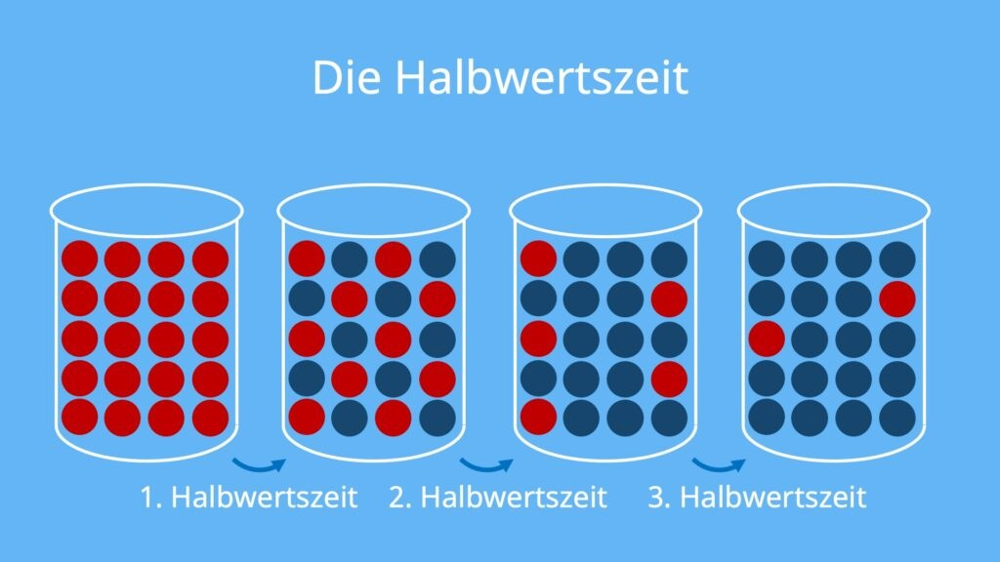

2) Tschernobyl: Warum waren manche Regionen stärker belastet als andere?

3) Tschernobyl: Wozu dient der Schutzbau (Sarkophag/New Safe Confinement)?

4) Fukushima: Welches Naturereignis war der Auslöser der Katastrophe?

5) Fukushima: Warum wurde die Lage im Kraftwerk so kritisch?

6) Fukushima: Welche Aussage ist richtig?

7) Radioaktiver Abfall: Wozu dienen CASTOR-Behälter?

8) Radioaktiver Abfall: Was bedeutet Halbwertszeit?